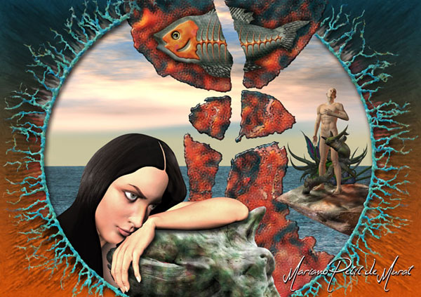

 |
| (1 of 7) |
"Visionary artist, creator of fabulous realities, transporting us from the Mexican Caribbean (his place of residence) to the borders of other worlds, surrealist, parallel, archaic or futuristic. The used technique is the "infographics" or digital art that offers the artist infinite possibilities for the creation of other realities."His work emerges from the exploration of the being, taking the submersion in the marine depths from the unconscious as a symbol for it. Innocence like weapon and eroticism as method, Mariano descends to the depths of his being, finding his reflection in the divine simplicity of the mineral kingdom, before overcoming his trip to the infinite and wonderful festival called universe.
"Just as the traditional method of painting with Mariano's method and media, "infographics" allows for the experimentation of collaging disparate information or images and modifying, manipulating them to a desired end. Brush and paint is a discipline available to many; only those with the imagination, the trained eye, the sense of composition, color, and attention to detail succeed in creating remarkable work. The desired end in this case is a glimpse at other worlds through the eye of an artist with all these qualities. A voyager who is willing to take us where we have not been before, to captivating, mesmerizing places where the most outrageous things happen, that parrallel in undefined ways what happens in our more familiar existence."
Mariano Petit de Murat's website